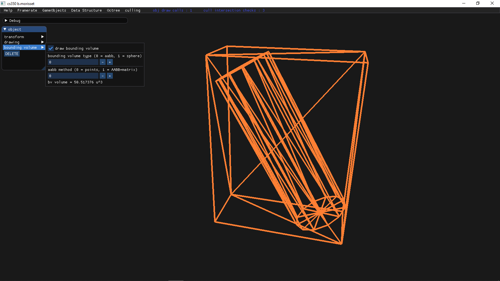
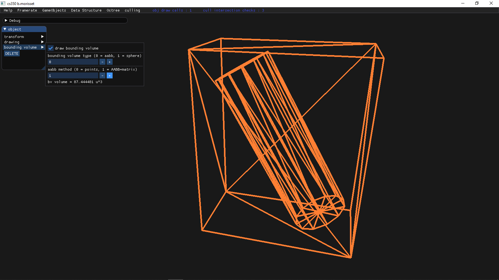
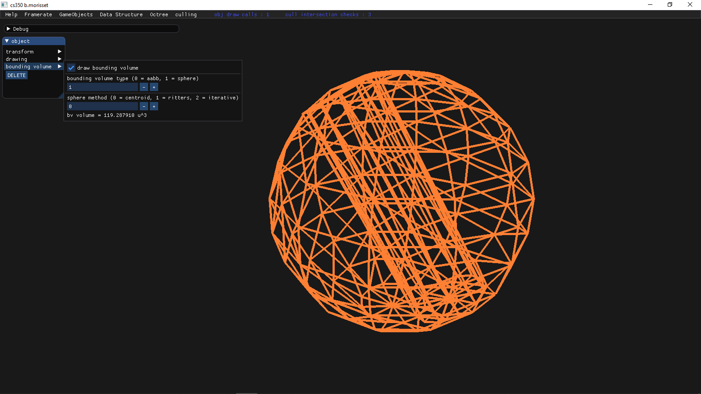
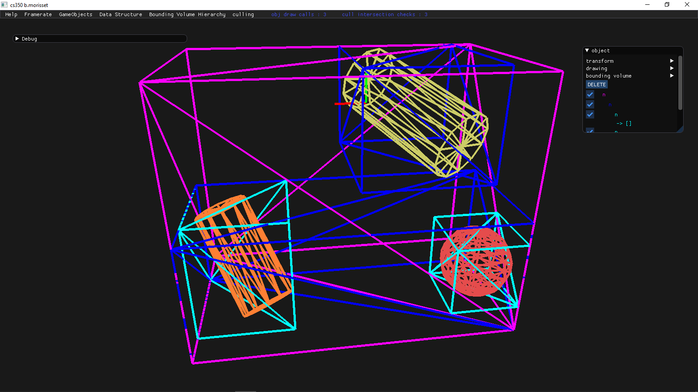
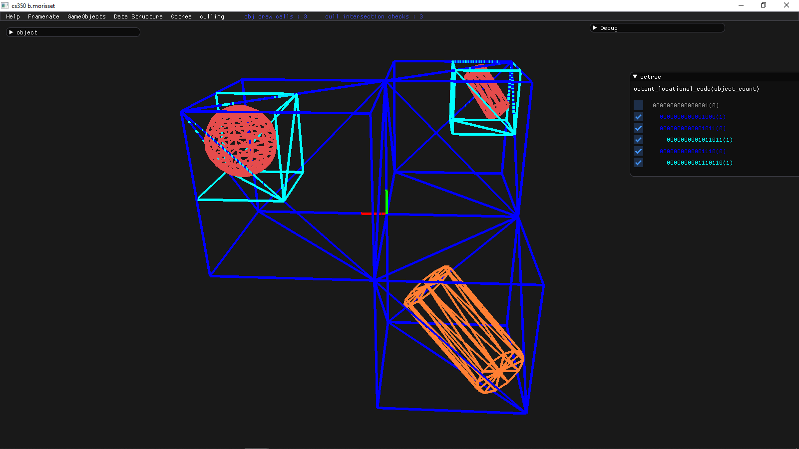
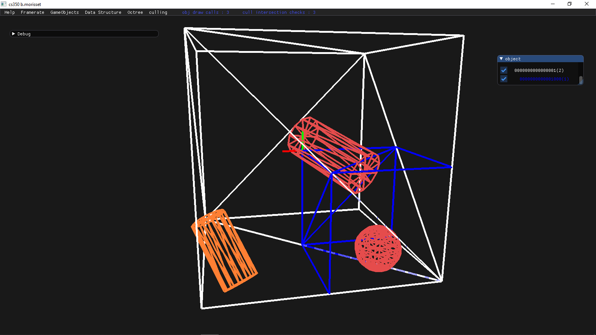
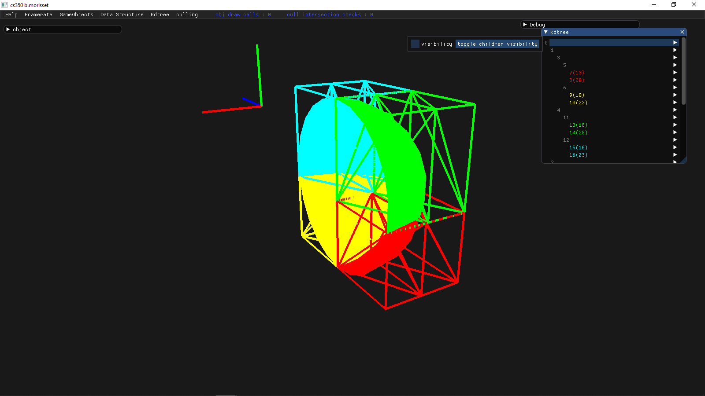
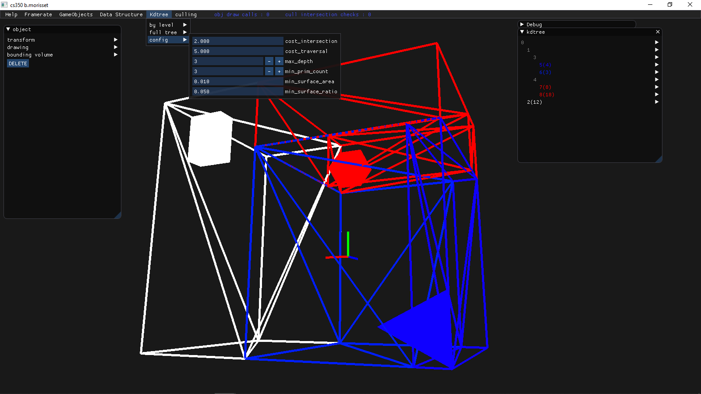

I developed this framework during the course CS350 - Advanced Computer Graphics II that I attended at Digipen - Bilbao during the Spring 2020 semester. In it I implemented the following spatial partitioning techniques: Bounding Volumes, Bounding Volume Hierarchy, Octree, KD-Tree.
Click here to download the executable.
I wrote the framework entirely in c++ with OpenGL and using the following libraries: GLFW, Dear ImGui, Glad, GLM, GoogleTest, KHR.
The implemented techniques are useful for optimizing rendering as well as collisions.
The rendering has been kept to a bare minimum as it is not the focus of this project.



Before using the actual geometry of the object, it is often faster to first check with a bounding approximation. This framework supports AABBs and Spheres as bounding volumes.
I implemented two methods to compute the AABB bounding volume: A, B
I implemented three methods to compute the Sphere bounding volume: centroid method, Ritter's Method and Ritter's iterative improvement method.

I implemented it as a binary tree in which each leaf is an AABB that tightly encapsulates the objects it contains.


This spatial partitioning data structure divides space evenly in octants recursively until the stop conditions are met. I implemented it using locational codes which reduces drastically reduces the memory needed to store in each octant the reference its children. Also, I implemented the octree as an array to improve memory coherence.


This spatial partitioning data structure divides the space one axis at a time without dividing along the same axis two times in a row. It takes the form of a binary tree that stores the triangles at the leaves.